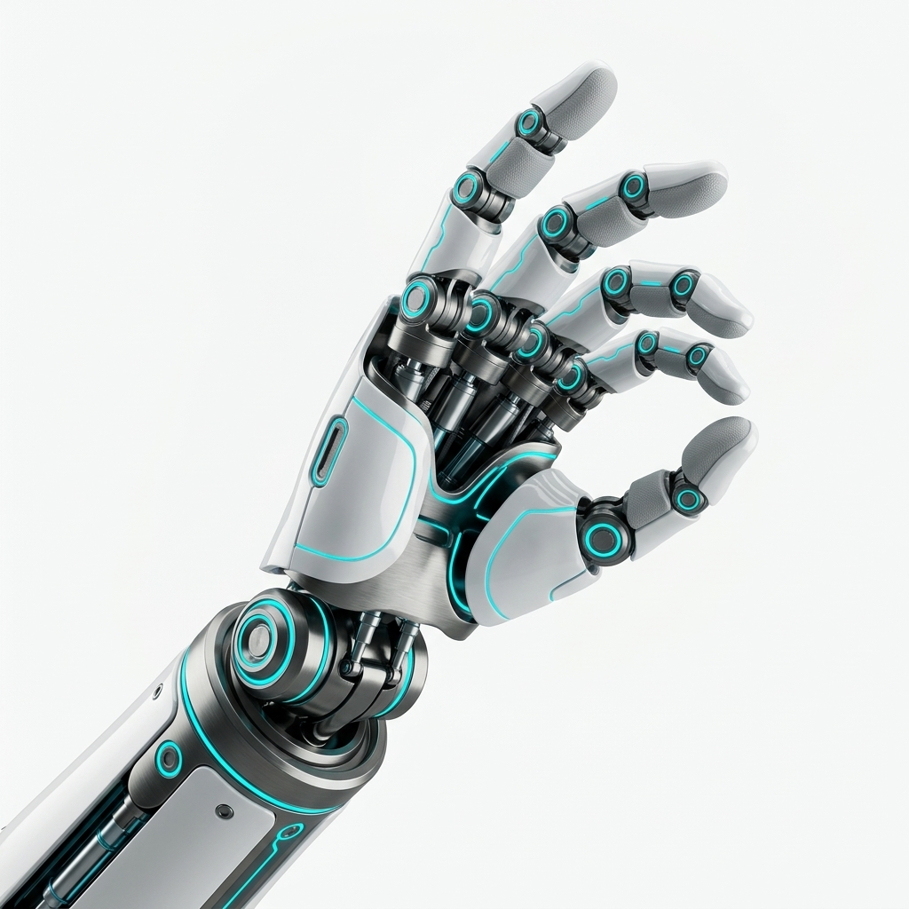

🌐 Real-Time 3D Kinematic Visualizer
LIVE ROBOT EYE
⚡ Rapid Poses & Motion Presets
J1
Base Pan
Rotation around Z-axis (-180° to +180°)
0.0°
0.00 rad
J2
Shoulder Pitch
Elevation pitch (-120° to +120°)
0.0°
0.00 rad
J3
Elbow Pitch
Forearm flex (-150° to +150°)
0.0°
0.00 rad
J4
Wrist Roll
Forearm axial roll (-180° to +180°)
0.0°
0.00 rad
J5
Wrist Pitch
Wrist bend pitch (-120° to +120°)
0.0°
0.00 rad
J6
Tool Roll
Continuous flange roll (-360° to +360°)
0.0°
0.00 rad
BIONIC DEXTEROUS END EFFECTOR
Master Grip Span Control
Controls the synchronous stroke of the multi-tendon hand and maps directly to the ROS 2 gripper controller.
APERTURE SPAN
35.0 mm
100% OPEN
INTELLIGENT GESTURE ENGINE
Autonomous Hand Gestures
MULTI-AXIS TENDON CHANNELS
Individual Finger Articulation
Thumb
0%
Index
0%
Middle
0%
Ring
0%
Pinky
0%
Resolution
640 × 480 px
Stream Rate
30.0 Hz
Mount Frame
camera_optical_frame
Latency
< 15 ms
🎯 AI TARGET OBJECT TRACKING & 3D POSE
0 Detected
Listening for target cubes/cylinders via OpenCV...
DESIGN UPGRADE ARCHITECTURE
Modern Cybernetic Dexterous Hand
Converted the original claw manipulator into an ultra-modern 5-finger articulated bionic hand. Featuring aerospace-grade pearl composite casing, titanium knuckle linkages, and glowing cyan illumination matching the Auron kinematics.

🔍 Click to View Full HD
Dexterous Bionic Hand
Articulated 5-digit hand with illuminated knuckle joints
🔍 Click to View Full HD
Full System Integration
6-DOF Auron Arm equipped with modern end-effector
TECHNICAL SPECIFICATIONS
| End-Effector Type | 5-Digit Multi-Phalanx Dexterous Hand |
| Kinematics DOF | 6-DOF Arm + 5 Multi-Segment Fingers |
| Actuation Mechanism | High-Torque Coreless Servos & Dyneema Tendons |
| Shell & Structure | Aero-Carbon Composite & Brushed Titanium |
| Grip Aperture Stroke | 0 mm (Full Grip) to 35 mm (Open) |
| Maximum Grasp Payload | 5.0 kg dynamic / 7.5 kg static |
| Tactile Feedback | Capacitive & Optical Fingertip Array |
| ROS 2 Interfaces | /arm_controller & /gripper_controller |
📊 Live Joint Position Telemetry
| Joint | Target | Actual | Tracking Error |
|---|---|---|---|
| J1 (Base Pan) | 0.0° | 0.0° | 0.0° |
| J2 (Shoulder) | 0.0° | 0.0° | 0.0° |
| J3 (Elbow) | 0.0° | 0.0° | 0.0° |
| J4 (Wrist Roll) | 0.0° | 0.0° | 0.0° |
| J5 (Wrist Pitch) | 0.0° | 0.0° | 0.0° |
| J6 (Tool Roll) | 0.0° | 0.0° | 0.0° |
| Hand Grip | 35.0 mm | 35.0 mm | 0.0 mm |
ROS 2 NODE & BUS DIAGNOSTICS
WebSocket Gateway:
ws://localhost:9090
Trajectory Publisher:
/arm_controller/joint_trajectory
Gripper Publisher:
/gripper_controller/joint_trajectory
Feedback Subscriber:
/joint_states [50 Hz]
Control Mode:
ROS 2 Control Active